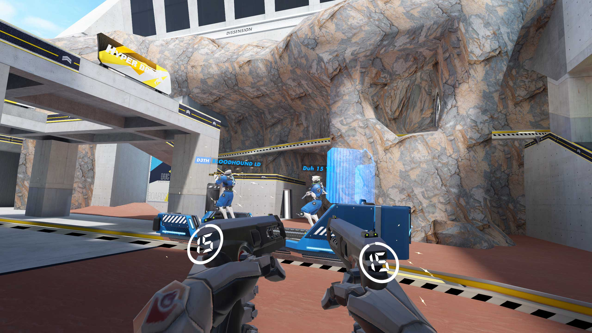
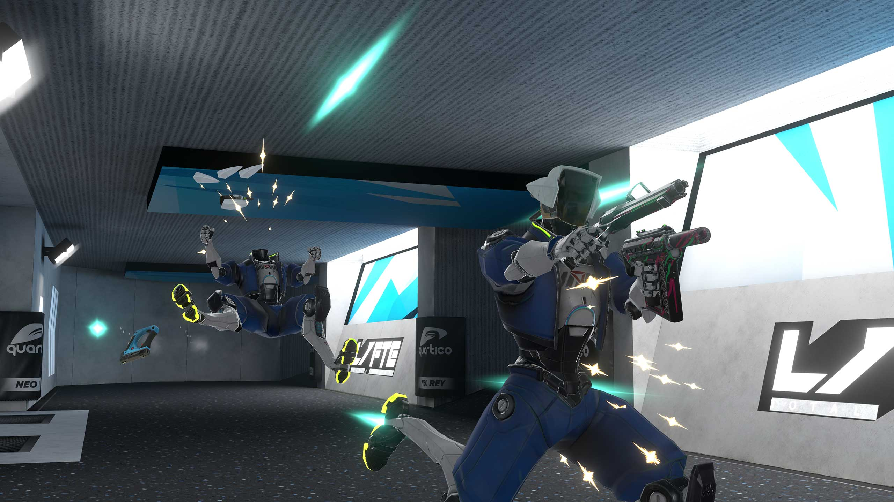
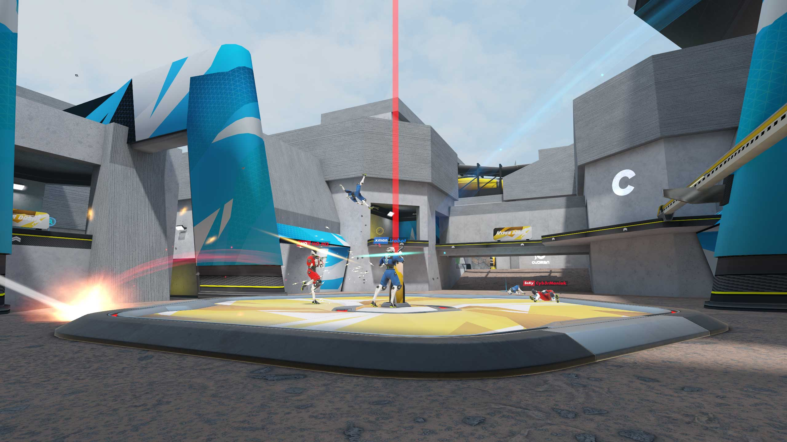
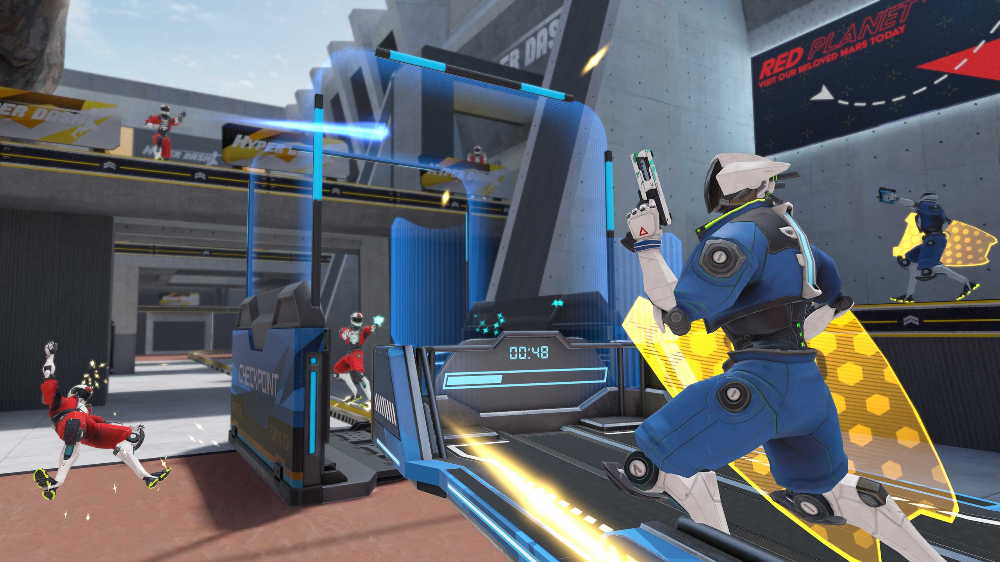

Hyper Dash
Fast paced mulitplayer movement shooter in VR inspired by Quake & Unreal tournament.
About
Hyper Dash is a fast paced multiplayer arcade shooter where you're dual wielding pistol-like guns. I worked on the project during my internship and during the majority of 2025 where I was supervisor of interns assigned to the project and lead of the project.
Starting with my internship, I worked on the 'Social HUBdate' which integrated the shop into the lobby and merged the victory room with the lobby. I was responsible for all the technicalities that came with being able to change cosmetics in the lobby. After that, I went on a very unexpected side quest of anti-cheat. I really enjoyed working on anti-cheat because it was combining a lot of things I learned during my studies in a satisfying way. Because of the nature of the topic I can unfortunately not say much about it here.
When 2025 rolled around, I was assigned 3 programmer interns. We were tasked with implementing gun DLCs and implementing toys. We also prepared a very cool and exciting event with a rogue bot named ISAAC which climaxed with releasing the much wanted melee/sword update. In between, I also was responsible for doing a weapon balance update (number tweaks).
Hyper Dash is a brown field project which made it an awesome first 'real' professional project to work on. A lot of lessons were learned of seeing how others tried to make the game and how difficult it was to work with the existing code. On the other hand, it did teach me to keep things simple. Hyper Dash code is very much the opposite of clean base classes, interfaces and inheritance. It tries to distil a lot into ints, bools, floats and vector math.
I feel very fortunate that I was trusted with being responsible for the project for such a long time.
Screenshots



